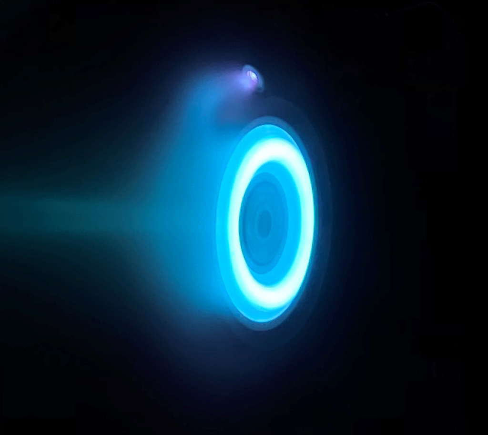
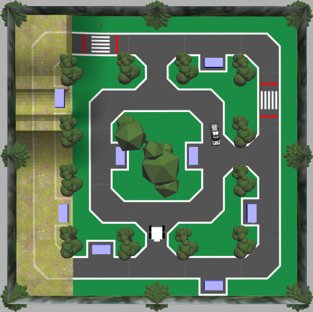

Hollow Cathode for Satellite Hall Effect Thruster
UBC, Vancouver | September 2024 – April 2025

Exosapien Hand Motion Controlled Mini-Mech
UBC, Vancouver | January 2024 – April 2024

Machine Learning Autonomous Robot Competition
UBC, Vancouver | January 2023 – April 2023

1st Place Autonomous Treasure Hunting Robot
UBC, Vancouver | July 2022 – August 2022